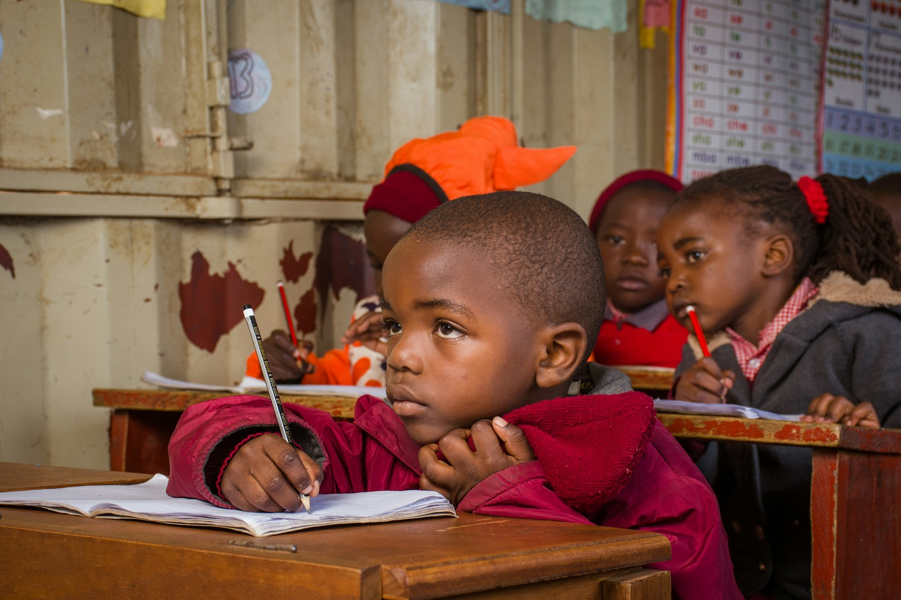

Schools & teachers
Host a materials drop-off, a subject talk or a parents' session. We bring student facilitators; you bring the room and an honest conversation.

Get involved
Time, a skill, a notebook, a bus fare, a phone call, a small grant — the work moves on practical things. Here is how you can add yours to a student's school journey.
Four ways in
You do not have to be in Malawi, and you do not have to be free every weekend. Be honest about what you can give — that is more useful than enthusiasm that runs out.
Show up for a session, a materials sorting day or a school visit. The most valuable thing you can bring is reliability.
See what it takes →Meet a small circle for a few months. You do not need to be perfect — you need to be consistent.
What mentoring means →Schools, clinics, businesses, NGOs and community groups: co-design a programme or host a session.
How partnership works →Fund learning materials, cover transport to exams, or share a skill. Small, specific support goes far.
What support buys →
01 · Volunteer
Volunteering with SHOAM is practical. You might help sort donated notebooks, translate a session into Chichewa, or deliver materials to a school. We will not invent a role for you to look busy.
What we ask: be on time, respect safeguarding, and tell us early if you cannot make it. What you get: real experience, a reference if you need one, and a group of people who will remember you showed up.

02 · Mentor
Our Mentorship Circles pair a small group of students with someone who has walked the road they are on: a final-year student, a graduate, a teacher or a young professional.
You do not need a degree in mentoring. You need to listen, keep your word, and be willing to say “I don't know, let's find out.” We will brief you on safeguarding and give you a simple structure for each meeting.
03 · Partner
The best partnerships are specific. Tell us what you actually have — a room, a bus, a facilitator, a market — and we will tell you honestly whether it fits.
Host a materials drop-off, a subject talk or a parents' session. We bring student facilitators; you bring the room and an honest conversation.
Share honest information about further study, bursaries and careers — and refer students to the right people before decisions are made.
Offer a placement, sponsor a stack of notebooks, lend a projector, or send someone to teach a practical skill.
Help us reach students who are not in any club or group — and make sure our work fits what families actually need.
Share tools, refer participants, co-facilitate, or simply tell us what you learned the hard way. We would rather collaborate than duplicate.
Fund a pilot with realistic overheads and honest reporting. We will show you what worked and what did not.
04 · Support
We would rather name the thing we need than ask for a vague donation. These are the line items a local student support fund has to cover.
School fees and exam costs can end a child's education before it really starts. Covering them keeps a student in the room.
The basics a classroom actually asks for. Small, specific, and completely necessary.
For a student who lives far away, transport is the difference between sitting the exam and missing it.
So volunteers can document deliveries, write honest updates and run their own sessions.
An hour of accounting, safeguarding, legal or communications advice is worth more than it sounds.
What happens next
We are a small team, so we will not pretend to answer instantly. But we will answer.
Use the contact form or Messenger and tell us what you can offer and how much time you have.
A named member of the team responds, usually within a few days, with an honest yes, no or “not yet”.
A short call or in-person chat to check fit, safeguarding and expectations — both ways.
A first session or a small piece of support. If it works, we build on it. If not, we say so.
Still deciding?
How is money handled? Who decides? What happens if a volunteer is not a good fit? Ask. An organisation worth joining can answer.